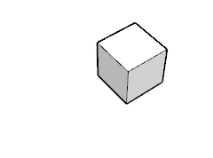

Unfold Tool
Unfold faces to single plane.
Tool Operation
Click face to fold.
Click face to fold it towards.
(Optional) Keep clicking faces.
Modifier Keys
Alt
Command
= Fold clicked face to selection instead of vice versa.
Learn more...